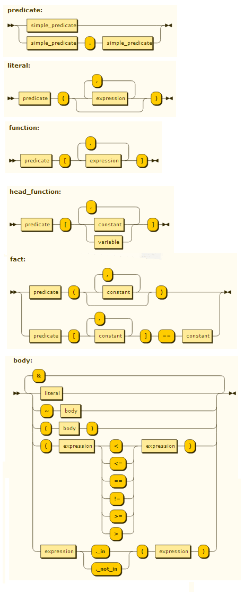
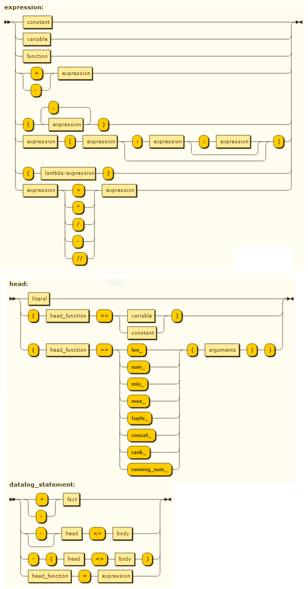

Reference
This reference is for the latest version. For previous versions, please follow the documentation link of the relevant version.
In-line datalog, datalog program and datalog string
Anin-line datalog statement is a Python statement:
- that follows the syntax of a datalog statement (see grammar below),
- where datalog constants, variables and unprefixed predicates have been previously declared globally using
pyDatalog.create_terms()(thus not declared in a method or class), - and where the prefix of prefixed predicates is the name of a class inheriting from
pyDatalog.Mixin.
Similarly, an in-line query is a Python statement that follows the syntax of a body (see grammar below).
By contrast, a datalog program is a set of datalog statements in a function prefixed by @pyDatalog.program(). It is executed only once, e.g. to load a set of clauses. Atoms do not need to be declared.
Finally, a datalog string can be submitted to the pyDatalog engine using pyDatalog.load() or pyDatalog.ask(). Atoms do not need to be declared. Constants cannot be python objects.
Grammar of pyDatalog
The terminal symbols in this grammar are defined in BNF as follows :
simple_predicate ::= [a-zA-Z_] [0-9a-zA-Z_]
constant ::= [a-z] [0-9a-zA-Z_] | [python literals](http://www.google.com/url?q=http%3A%2F%2Fdocs.python.org%2Freference%2Flexical_analysis.html%23literals&sa=D&sntz=1&usg=AOvVaw0K5TdZIG3mVkZ-bcSDs1jR) | python object
variable ::= [A-Z_] [0-9a-ZA-Z_], thus starting with an uppercase
- Note : words starting with
pyDare reserved for pyDatalog


Please note:
- a function should be defined with the most general clause first, and more specific clauses next. When querying a function, the last one is used first, and the query stops when an answer is found.
- although the order of pyDatalog statements is indifferent (except for functions), the order of literals within a body is significant:
- an expression used as the argument of a logic function must be bound by a previous literal (otherwise no result is returned)
- the right hand side of
X==exprmust be bound by a previous literal (otherwise, no result is returned) - the right hand side of
p[X]< exprmust be bound (otherwise, no result is returned). - the left and right hand sides of
expr1 < expr2comparisons must be bound (otherwise, an error is raised) - an inequality must be surrounded by parenthesis, and can only appear in the body of a clause
- an aggregate function can only appear in the head of a clause. Note the
` suffix (e.g.sum`) to differentiate with the python aggregate function - "
=" defines a logic formula, while "==" appears in a fact, clause or query and must always be surrounded by parenthesis - comparisons are type-sensitive, without any implicit type conversion.
- the head of a clause can only contain constant or variable (but no expressions).
Built-in functions are:
(Y==len_(X)): Y is the length of the list bound to X(Y==range_(X)): Y is a list containing numbers from0to X-1(Y==format_(F, X1, X2, ..)): Y is the formatting of X1, X2, ... according to the F specifications (see format() in python documentation)
Aggregate functions:
- len_
(P[X]==len_(Y)) <= body: P[X] is the count of values of Y (associated to X by the body of the clause) - sum_
(P[X]==sum_(Y, for_each=Z)) <= body: P[X] is the sum of Y for each Z. (Z is used to distinguish possibly identical Y values) - min_ , max_
(P[X]==min_(Y, order_by=Z)) <= body: P[X] is the minimum (or maximum) of Y sorted by Z. - tuple_
(P[X]==tuple_(Y, order_by=Z)) <= body: P[X] is a tuple containing all values of Y sorted by Z. - concat_
(P[X]==concat_(Y, order_by=Z, sep=',')) <= body: same as 'sum' but for string. The strings are sorted by Z, and separated by ','. - rank_
(P[X]==rank_(group_by=Y, order_by=Z)) <= body: P[X] is the sequence number of X in the list of Y values when the list is sorted by Z. - running_sum_
(P[X]==running_sum_(N, group_by=Y, order_by=Z)) <= body: P[X] is the sum of the values of N, grouped by Y, that are before or equal to X when N's are sorted by Z. - The named arguments must be specified in the given order. X and the named arguments can be a list of variables (instead of just one variable), to represent more complex grouping. Variables in
order_byarguments can be preceded by '-' for descending sort order. If the aggregation function does not depend on a variable, use a constant (e.g.P[None] == len_(Y)).
Methods and classes
The pyDatalog module has the following methods :
create_terms(args) : adds "logic terms" in the scope of the caller. `create_terms` must be called at module level (thus not in a function or class definition) It can have any number of arguments : each arg is a string containing the names of one or more logic terms to be created, separated by commas. If a term refers to a Python module, class or function, it is given the capability to appear in logic clauses, with pyDatalog.Variable arguments. Otherwise, logic terms are created either as `pyDatalog.Variable` (when they start with an upper case) or as `pyParser.Symbol` (otherwise). create_terms also creates symbols for the aggregate functions (len_, min_, ...).
assert_fact(predicate_name, terms) : asserts `predicate_name(terms[0], terms[1], ...)`
retract_fact( predicate_name, terms) : retracts `predicate_name(terms[0], terms[1], ...)`
- load(code) : where code is a string containing a set of datalog statements, with identical indentation and separated by line feeds. This method can be used to add facts and clauses to the datalog database.
- program() : a function decorator that loads the datalog program contained in the decorated function.
- predicate() : a function decorator that declares a custom predicate resolver written in python
- ask(query) : where query is a string containing a logic query. It returns an instance of
pyDatalog.Answer, orNone. - clear() : removes all facts and clauses from the datalog database.
An instance of the pyDatalog.Variable class has the following attributes and methods:
data: list of possible values for the variable. Updated on request after each in-line query.v(self): returns the first value of the variable, orNone- the methods inherited from collections.UserList
The following table shows how to use X as a variable in a logic clause, or to get the possible values of X after a query:
| X as a variable in a clause or query | X for the result of a query (long form) | X for the result of a query (shortcut) | Notes |
|---|---|---|---|
X |
X.data |
||
X==1 |
set(X.data)==set((1,)) |
the order in X.data is random |
|
X[0] |
the first item in a possible value of X (where X represents a list) | ||
X.data[0] |
X.v() |
the first possible value of X | |
X[1:2] |
a slice in a possible value of X (where X represents a list) | ||
X.data[1:2] |
a slice of the result | ||
len_(X) |
the length of X (where X represents a list) | ||
len(X.data) |
len(X) |
the number of possible values of X | |
Y._in(X) |
for x in X.data: |
for x in X: |
loop over each value of X |
str(X.data) |
str(X) |
the string representation of the list of values of X | |
print(X.data) |
print(X) |
An instance of the pyParser.Query class is returned by an in-line query and has the following attributes and methods:
data: a list of tuples that satisfy the query, orTrue, or[]. Each tuple contains as many items as there are variables in the query. If the query leaves some variables unbound, its data isTrue. If the query is not satisfiable, its answer is []._eq_(self, other): returnsTrueif the result of the query is equal toother, after converting both of them to sets_ge_(self, other): returns the first value ofother, whereotheris a pyDatalog.Variable appearing in the query_str_(self): pretty prints the result of the query, in tabular format- the methods inherited from collections.UserList
The following table shows how to use p(X) as a literal in a clause, or to get the result of the p(X) in-line query.
| p(X) in a clause or query | the result of p(X) (long form) | the result of p(X) (shortcut) | Notes |
|---|---|---|---|
p(X) |
p(X).data |
||
p(X) == [(1,),] |
the order in p(X).data is random |
||
p(X).data[0][0] |
p(X) >= X |
the first possible value of X satisfying p(X) |
|
len(p(X).data) |
len(p(X)) |
the number of possible answers | |
for x in p(X).data: |
for x in p(X): |
loop over each possible answer | |
str(p(X).data) |
the string representation of the list of answers | ||
str(p(X)) |
the list of answers, in tabular format | ||
print(X.data) |
print(X) |
prints the list of answers (in tabular format) |
After an in-line query is resolved, each variable in the query contains the list of possible values. It should be noted that the result of the query is determined when it is first needed (and thus not in the statement that defines the query).
An instance of the pyDatalog.Answer class is returned by pyDatalog.ask("query") and has the following attributes and methods:
name: name of the predicate that was queriedarity: arity of the predicateanswers: a list of tuples that satisfy the query, orTrue, orNone. Each tuple contains as many items as there are variables in the query. If the query leaves some variables unbound, its answer isTrue. If the query is not satisfiable, its answer isNone._eq_(other): facilitates comparison to another set of tuples_str_(): prints the answer
Logic.Logic is a class whose instances contain a set of clause and facts, against which in-line queries can be run. Each thread (other than the main thread) must call the Logic constructor before executing in-line queries. The constructor can take the following arguments:
Logic(): empty the set of clauses and facts in the current thread and returns a Logic object.Logic(True): returns the Logic object in the current thread, for later use in the same or another thread.Logic(logic): sets the Logic object in the current thread tologic(a Logic object from the same or another thread), and returns it
pyEngine has the following attribute :
Logging= true : activates the logging. You must also activate python logging, usingimport loggingand configuring it (e.g.logging.basicConfig(level=logging.DEBUG)).Logging.INFOlogs derived facts when they are established, whileLogging.DEBUGlogs a deeper trace of pyDatalog's reasoning
Note
Beware that, when loading a datalog program, a symbol could become a constant. For example,
for i in range(3):
+ b(i)
print(pyDatalog.ask("a('i')")) # prints a set with 1 element : the ('i',) tuple
print(pyDatalog.ask("b(X)")) # prints a set with 3 elements, each containing one element : 0, 1 or 2
The for loop assigns an integer to i, which is inserted as a constant in + b(i).